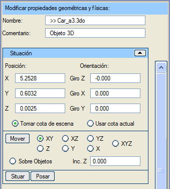
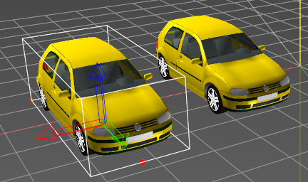
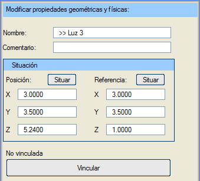

Genel Bilgiler
Geometrilerin, billboard'ların veya ışıkların klonları, bilgisayar belleğindeki ve depolama ortamlarındaki veri yükünü basitleştirmek ve azaltmak için kullanılır.
Seçenekler
Geometri Klonu

Sadece nesne klonunu yerleştirmek ve yönlendirmek için seçenekler bulunur; ne geometri ne de malzeme değiştirilebilir.
İsim: klonu bir isimle tanımlamayı sağlar.
Yorum: bu tüp nesnesine açıklayıcı bir yorum eklemeyi sağlar.
Konum
(X, Y, Z): tüpün tam konumunu belirtir.
Yönelim (X dönüşü, Y dönüşü, Z dönüşü): tüpün her bir eksen etrafındaki dönüşünü belirtir. Dönüşler Z->X->Y sırasında uygulanır. Z ekseni etrafındaki dönüş (azimut, heading) -400º ile 400º arasında değerler alır. X ekseni etrafındaki dönüş (pitch) -360º ile 360º arasında değerler alır. Y ekseni etrafındaki dönüş (roll) -360º ile 360º arasında değerler alır.
Sahneden Kot Al:
tüpü 3B görüntüleyicide taşırken veya yerleştirirken, tüpün sahnedeki nesnelerin üzerine oturmasını sağlar.
Mevcut Kotu Kullan:
tüpü 3B görüntüleyicide taşırken veya yerleştirirken, konuma Istram'ın "Mevcut Kotu"na karşılık gelen kot atanır.
Taşı (XY, XZ, YZ, X, Y, Z, XYZ, Nesneler Üzerinde): bir tüpü 3B ortamda imleç ile sürükleyerek taşımayı sağlayan "taşıma" modunu etkinleştirir. Tüpün taşınmak istendiği düzlemler kısıtlanabilir. "Nesneler Üzerinde" modu, tüpü imlecin hareket ettiği nesnenin yüzeyine yerleştirir. Taşıma modundan "Esc" tuşuna basarak veya bu butona tekrar tıklayarak çıkılır.
Z Artımı: tüpün yerleştirildiği kota eklenecek bir mesafe tanımlar.
Yerleştir: bir tüpü imleç ile seçilen belirli bir noktaya yerleştirmeyi sağlar.
Yüzeye Oturt: sınırlayıcı kutunun altındaki "zemine" en iyi şekilde uyum sağlaması için tüpün dönüş açılarını yapılandırır.

Resimde, menü görselinde tanımlanan klon gösterilmektedir.
Billboard Klonu
Billboard'lar biraz özel bir nesne türüdür ve klonları da öyledir. Billboard'lar manuel olarak oluşturulduğunda, oluşturulan her billboard kendi başına bir billboard'dur. Ancak "serpiştirme" yoluyla veya Sanal 3B'ye girilirken yüklenerek oluşturulurlarsa, aynı tipteki billboard'lar otomatik olarak klonlara dönüştürülür; ilki hariç, diğer hepsi ilkini klonlar.
Eğer billboard bir trafik işareti veya bir göstergeyi temsil ediyorsa, boyutları tüm klonlar için aynıdır.
Buna karşılık, eğer billboard bir ağacı temsil ediyorsa, klonlarının tamamen aynı olmaması ilginç olabilir. Ayrıca, billboard'ların özellikleri, ilişkili oldukları sembollerde veya hücrelerde saklanır. Bu şekilde, boyutları değiştirilerek benzer ağaçlardan oluşan bir orman oluşturulabilir. Bu nedenle, normal bir billboard için sunulan tüm seçenekler burada da mevcuttur.
Işık Klonu
Klonlanmış ışıklar, klonun konumunu ve geometriye olan bağlantısını değiştirmeye olanak tanır.
İsim:
klonu bir isimle tanımlamayı sağlar.
Yorum: bu ışık klonuna açıklayıcı bir yorum eklemeyi sağlar.
Konum
(X, Y, Z): ışık klonunun tam konumunu belirtir.
Referans
(X, Y, Z): ışık klonunun aydınlattığı noktanın tam konumunu belirtir.
Yerleştir:
hem konum hem de referans için, bu buton kullanılarak koordinatları 3B görüntüleyicideki sahneden alınabilir.
Bağla: Bu seçenek, bir 3B geometri nesnesi ile bir ışık arasında bir ilişki kurmayı sağlar; öyle ki, ışığı konumlandıran koordinatlar o nesneye göreceli olur. Nesnenin konumu veya yönelimi değiştiğinde, ışık nesneye bağlı olarak hareket eder. Bir araç farları buna örnek olabilir.
|